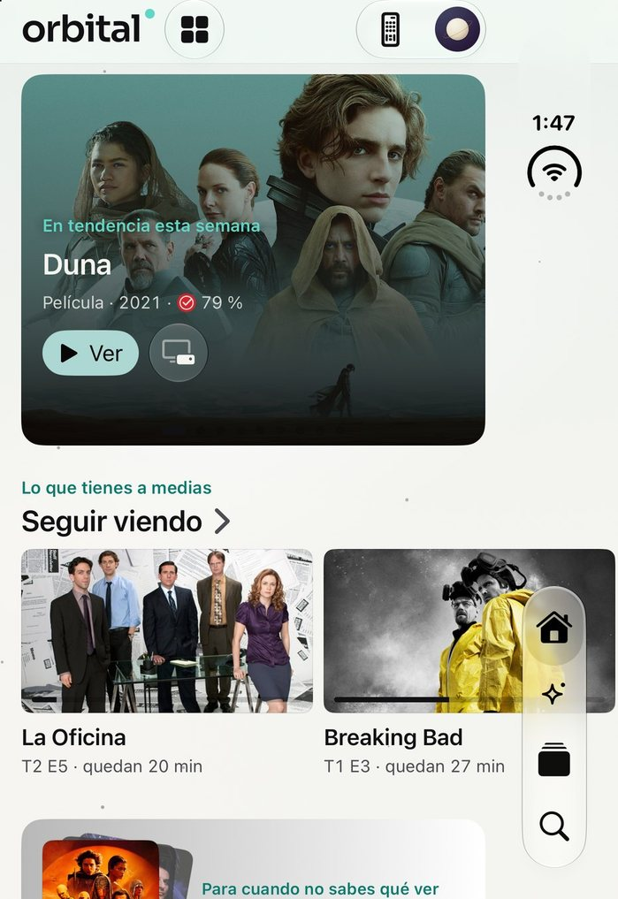
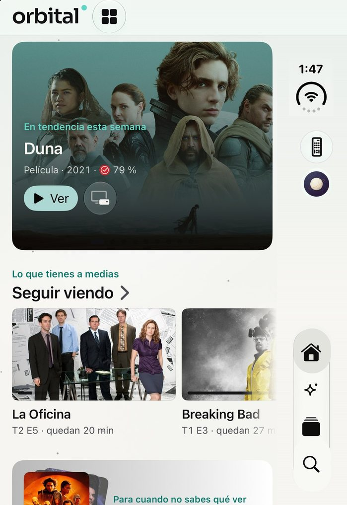
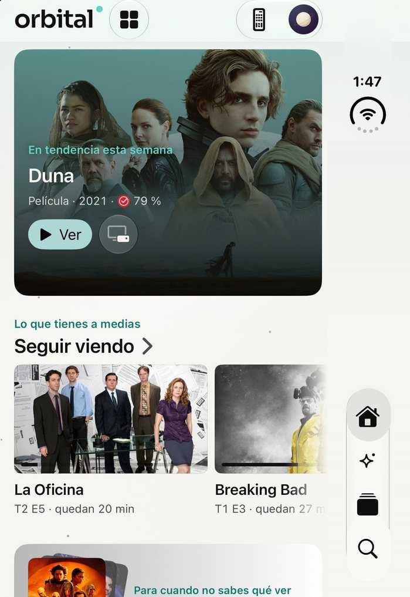
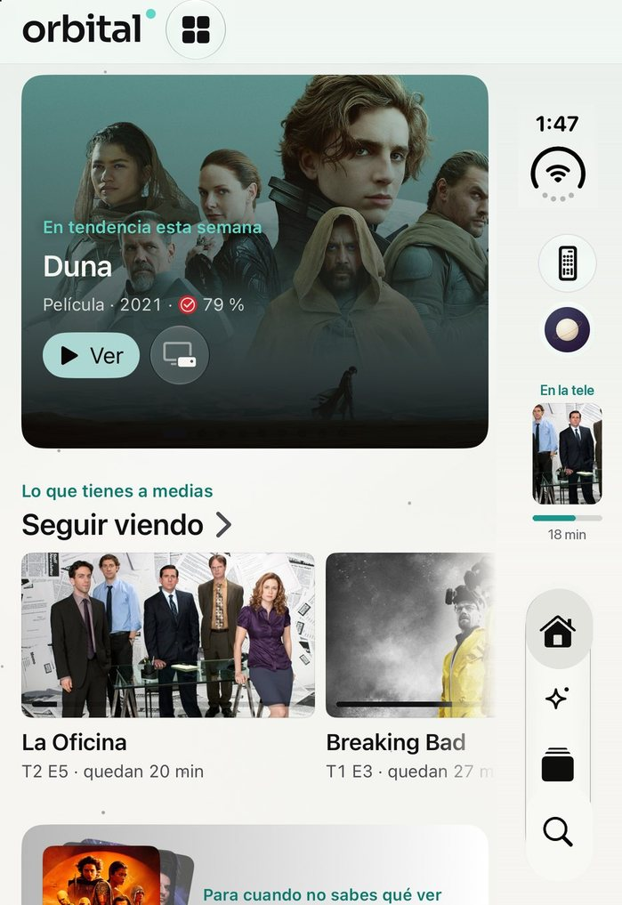
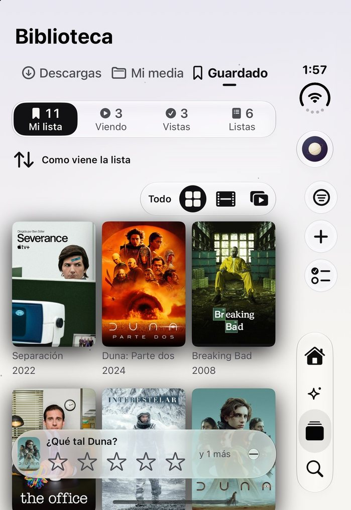
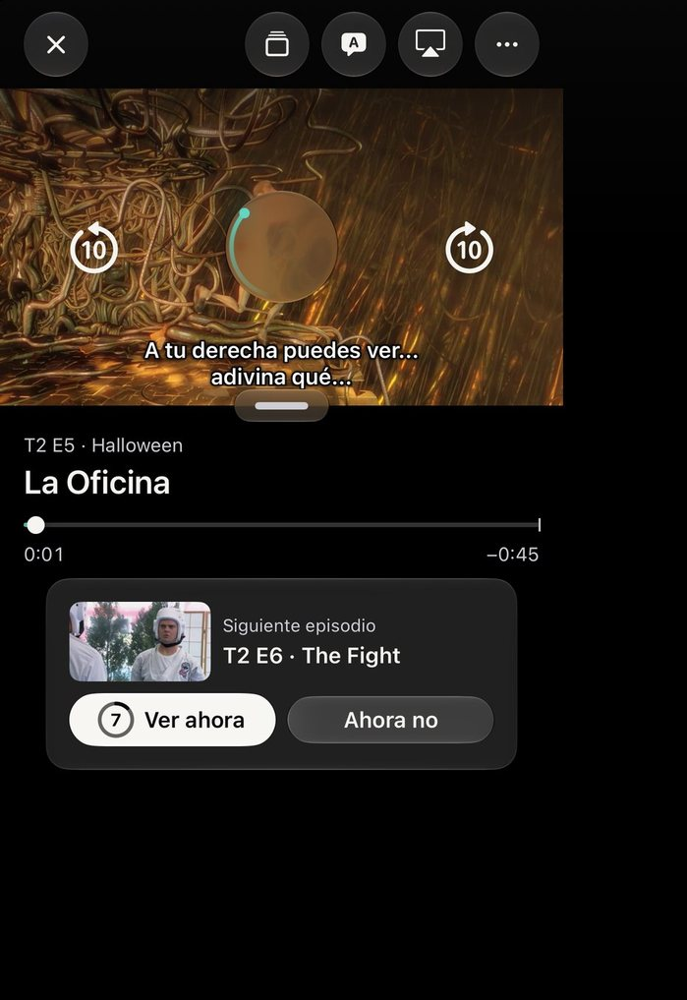
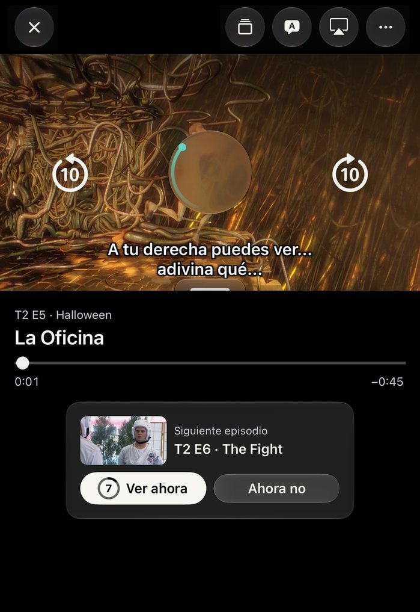
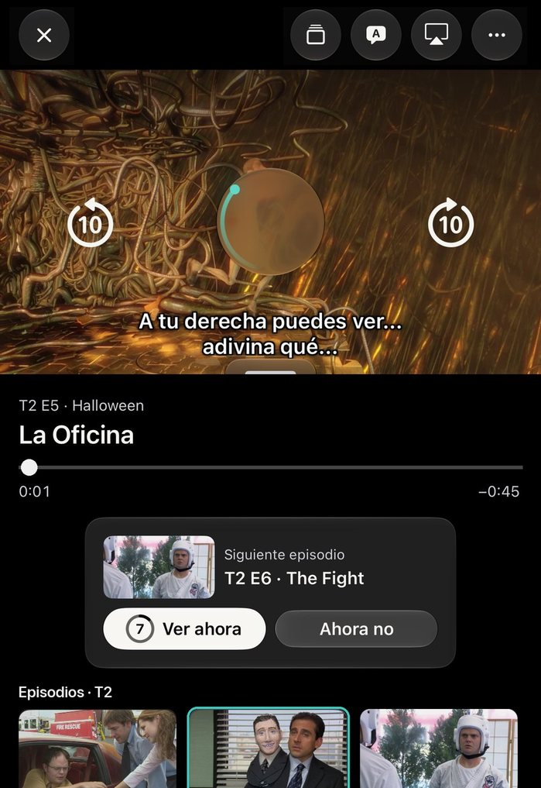

<title>El dock del Duo cerrado</title>
<meta name="claude:viewport-fit-sides" content="cover">
<link rel="stylesheet" href="https://fonts.googleapis.com/css2?family=Inter:wght@400;500;600&family=Space+Grotesk:wght@600;700&display=swap">
<style>
/* Tres decisiones, cada una con «Hoy» y sus opciones lado a lado en el tamaño de la pantalla de afuera del Duo (466 × 678). */
:root {
  --bg: #f2f4f3; --card: #ffffff; --fg: #14181a; --muted: #5a6468; --line: #dde3e2; --accent: #0b8a85; --pick: #0b8a85; --pick-bg: #e3f4f2;
  --display: "Space Grotesk", system-ui, sans-serif; --body: "Inter", system-ui, sans-serif;
}
@media (prefers-color-scheme: dark) { :root:not([data-theme="light"]) {
  --bg: #0e1213; --card: #171c1e; --fg: #e7eced; --muted: #9aa6aa; --line: #283033; --accent: #3cc6bf; --pick: #3cc6bf; --pick-bg: #12302e; color-scheme: dark } }
:root[data-theme="dark"] {
  --bg: #0e1213; --card: #171c1e; --fg: #e7eced; --muted: #9aa6aa; --line: #283033; --accent: #3cc6bf; --pick: #3cc6bf; --pick-bg: #12302e; color-scheme: dark }
body { background: var(--bg); color: var(--fg); font-family: var(--body); line-height: 1.5;
  padding-left: max(16px, env(safe-area-inset-left, 0px)); padding-right: max(16px, env(safe-area-inset-right, 0px)); padding-block: 28px 72px; }
main { max-width: 1120px; margin: 0 auto; display: grid; gap: 40px; }
h1 { font-family: var(--display); font-size: clamp(1.7rem, 4vw, 2.3rem); margin: 0; text-wrap: balance; }
h2 { font-family: var(--display); font-size: 1.35rem; margin: 0; text-wrap: balance; }
.intro { display: grid; gap: 10px; max-width: 66ch; }
.intro p, .lead { margin: 0; color: var(--muted); }
.done { background: var(--card); border: 1px solid var(--line); border-radius: 12px; padding: 14px 16px; max-width: 66ch; display: grid; gap: 4px; }
.done b { font-family: var(--display); color: var(--accent); }
.done p { margin: 0; }
section.decision { display: grid; gap: 14px; }
.dhead { display: flex; gap: 12px; align-items: baseline; flex-wrap: wrap; }
.code { font-family: var(--display); font-weight: 700; color: var(--accent); font-variant-numeric: tabular-nums; }
.options { display: grid; grid-template-columns: repeat(auto-fit, minmax(min(100%, 250px), 1fr)); gap: 16px; }
.opt { background: var(--card); border: 1px solid var(--line); border-radius: 14px; padding: 12px; display: grid; gap: 10px; align-content: start; min-width: 0; }
.opt.pick { border: 2px solid var(--pick); background: linear-gradient(var(--pick-bg), var(--card) 40%); }
.opt.today { opacity: .92; }
.opt header { display: flex; gap: 8px; align-items: baseline; flex-wrap: wrap; }
.opt h3 { margin: 0; font-size: 1rem; font-weight: 600; flex: 1; min-width: 0; }
.tag { font-size: .72rem; font-weight: 600; letter-spacing: .03em; color: var(--pick); border: 1px solid var(--pick); border-radius: 999px; padding: 1px 8px; }
.tag.grey { color: var(--muted); border-color: var(--line); }
.opt img { width: 100%; height: auto; border-radius: 12px; border: 1px solid var(--line); display: block; background: #000; }
.opt ul { margin: 0; padding-left: 18px; font-size: .88rem; display: grid; gap: 3px; }
.opt li::marker { color: var(--muted); }
.plus { color: var(--fg); } .minus { color: var(--muted); }
.why { margin: 0; font-size: .92rem; max-width: 70ch; }
.why b { color: var(--accent); }
.dictate { background: var(--card); border: 1px solid var(--line); border-radius: 12px; padding: 16px; display: grid; gap: 8px; max-width: 70ch; }
.dictate p { margin: 0; }
.dictate .say { font-family: var(--display); font-size: 1.25rem; font-weight: 700; color: var(--accent); }
.notes { font-size: .88rem; color: var(--muted); max-width: 70ch; display: grid; gap: 6px; }
.notes p { margin: 0; }
</style>
<main>
  <section class="intro">
    <h1>El dock del Duo cerrado</h1>
    <p>Cuando el Duo está cerrado, el iPhone pone la hora y las pestañas en una columna a la derecha. Hoy cada pantalla la trata distinto. En Inicio los carruseles pasan por debajo de las pestañas y chocan. Arriba, tu foto y el control se quedan en su barra y dejan un hueco. El reproductor deja la columna negra. Y a la mitad de la columna no hay nada.</p>
    <p>Abajo van tres decisiones, cada una con cómo se ve hoy y sus opciones. Las maquetas están armadas con pedazos de las pantallas reales.</p>
  </section>

  <div class="done">
    <p><b>Ya hecho:</b> el espacio vacío de abajo. «¿Qué tal…?» y los avisos ya no le dejan lugar a una barra de pestañas que ahora está al costado. Bajan a la orilla, a la altura del botón de Buscar. Se ve en la maqueta de Biblioteca.</p>
  </div>

  <section class="decision" aria-labelledby="dr1">
    <div class="dhead"><span class="code">DR1</span><h2 id="dr1">Inicio y lo de arriba</h2></div>
    <p class="lead">Qué pasa con el control de la tele y tu foto, y hasta dónde llega el contenido.</p>
    <div class="options">
      <article class="opt today">
        <header><h3>Hoy</h3><span class="tag grey">así está</span></header>
        
        <ul><li class="minus">El carrusel corre por debajo de las pestañas y chocan.</li><li class="minus">Arriba a la derecha queda un hueco junto a la hora.</li></ul>
      </article>
      <article class="opt pick">
        <header><span class="code">DR1-A</span><h3>Los botones a la columna</h3><span class="tag">recomendada</span></header>
        
        <ul><li class="plus">El control y tu foto bajan a la columna, bajo la hora, como ya lo hacen Buscar y el mosaico de Explorar.</li><li class="plus">El contenido se detiene antes de la columna: nada choca con las pestañas.</li><li class="minus">Arriba queda solo el logo y el botón de vistas.</li></ul>
      </article>
      <article class="opt">
        <header><span class="code">DR1-B</span><h3>Solo ordenar</h3></header>
        
        <ul><li class="plus">Los botones se quedan donde ya los conoces.</li><li class="plus">El carrusel también se detiene antes de la columna.</li><li class="minus">Sigue el hueco arriba a la derecha y la columna se ve vacía.</li></ul>
      </article>
    </div>
    <p class="why"><b>Por qué A:</b> es lo que te gustó del mosaico de Explorar, llevado a todas las pestañas. La columna queda como el lugar fijo de lo que es tuyo (la hora, tu foto, el control) y el contenido nunca se mete debajo. En los demás iPhone no cambia nada.</p>
  </section>

  <section class="decision" aria-labelledby="dr2">
    <div class="dhead"><span class="code">DR2</span><h2 id="dr2">El hueco de en medio de la columna</h2></div>
    <p class="lead">Entre los botones de arriba y las pestañas quedan unos 200 puntos vacíos en casi todas las pantallas.</p>
    <div class="options">
      <article class="opt">
        <header><span class="code">DR2-A</span><h3>Lo que está pasando</h3></header>
        
        <ul><li class="plus">Si la tele está viendo algo, ahí sale el póster y cuánto falta. Al tocarlo se abre el control.</li><li class="plus">Lo mismo serviría para el juego de la consola o una descarga.</li><li class="minus">Con la tele apagada el hueco regresa.</li><li class="minus">Hay que probar en el simulador cómo lo acomoda el iPhone; no es seguro que respete ese tamaño.</li></ul>
      </article>
      <article class="opt pick">
        <header><span class="code">DR2-B</span><h3>Los botones de cada pantalla</h3><span class="tag">recomendada</span></header>
        
        <ul><li class="plus">Los botones propios de cada pantalla bajan a la columna. En Biblioteca son filtrar, agregar y elegir varias.</li><li class="plus">El contenido gana su renglón y la columna siempre tiene algo útil.</li><li class="minus">Esos botones quedan un poco más lejos del contenido que tocan.</li></ul>
      </article>
    </div>
    <p class="why"><b>Por qué B:</b> llena el hueco siempre, no solo cuando la tele está prendida, y usa los mismos botones de hoy. A la puedo sumar después, encima de los botones, cuando la tele tenga algo y ya la hayamos visto en el simulador.</p>
  </section>

  <section class="decision" aria-labelledby="dr3">
    <div class="dhead"><span class="code">DR3</span><h2 id="dr3">El reproductor</h2></div>
    <p class="lead">El video y sus controles se detienen antes de la columna, que queda negra. Abajo de «Siguiente episodio» también sobra pantalla.</p>
    <div class="options">
      <article class="opt today">
        <header><h3>Hoy</h3><span class="tag grey">así está</span></header>
        
        <ul><li class="minus">La franja negra de la derecha no sirve para nada.</li><li class="minus">Abajo queda casi un tercio vacío.</li></ul>
      </article>
      <article class="opt">
        <header><span class="code">DR3-A</span><h3>De orilla a orilla</h3></header>
        
        <ul><li class="plus">El video crece y llega a la orilla. Los botones se reparten en todo el ancho.</li><li class="minus">Abajo sigue vacío.</li></ul>
      </article>
      <article class="opt pick">
        <header><span class="code">DR3-B</span><h3>De orilla a orilla y los episodios abajo</h3><span class="tag">recomendada</span></header>
        
        <ul><li class="plus">Lo mismo que A, y en lo negro de abajo van los episodios de la temporada, con el que estás viendo marcado.</li><li class="plus">Cambias de capítulo sin abrir otro panel.</li><li class="minus">En películas abajo no hay episodios: ahí iría lo que sigue de tu lista o se queda limpio.</li></ul>
      </article>
    </div>
    <p class="why"><b>Por qué B:</b> quita la franja y además le da uso a la pantalla que sobra. El panel de episodios ya existe; aquí solo se queda a la vista.</p>
  </section>

  <section class="dictate" aria-label="Para dictar">
    <p>Para dictar, el código de cada decisión. Mi recomendación:</p>
    <p class="say">DR1-A · DR2-B · DR3-B</p>
    <p>Si quieres otra cosa en alguna, dime el código y lo que cambiarías, por ejemplo «DR2-A también».</p>
  </section>

  <section class="notes" aria-label="Notas">
    <p>Lo revisaron dos agentes por separado, uno de producto y uno técnico. Descarté una columna de vidrio entera de arriba abajo: la columna la dibuja el iPhone y la app no puede cambiarle el fondo. El arreglo del reproductor es chico: hoy solo usa las orillas cuando está acostado.</p>
    <p>Lo que elijas se aplica en todas las pantallas que tienen columna, no solo en las de las maquetas. En los demás iPhone no cambia nada.</p>
  </section>
</main>
